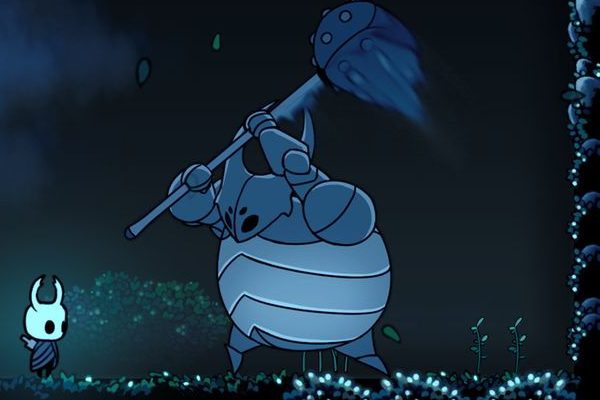
Mundo 1 · Sendero Verde
Bony Dragon
→ False Knight
YOMARPasea, salta y lanza huesos; le dañan flecha y espada. En el remake, la maza. Vida: 24.
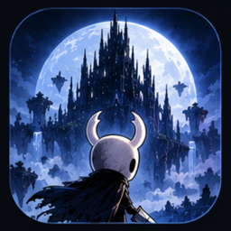
GALIOUSCómo se hizoUn clásico de MSX de 1987 desmontado pieza a pieza, medido en el emulador y vuelto a construir en Unity con el arte, la música y la sensación de Hollow Knight.
Proyecto educativo de rldona · Cómo se hizo
Aprender cómo está hecho un juego por dentro: abrir la ROM, medirlo todo y rehacerlo en un motor moderno sin traducir ni una línea de ensamblador.
Knightmare II: The Maze of Galious (Konami, MSX, 1987) es un laberinto de salas fijas: un castillo de 147 salas y 10 mundos con llave, lápida, palabra y jefe. Dos personajes, Popolon y Aphrodite, recorren el castillo buscando objetos, flechas, monedas y llaves para abrir mundo tras mundo.
Todo cabe en una ROM de 128 KB repartida en bancos que se paginan, con un bucle de juego a unos 30 ciclos por segundo.
Galious: The Hollow Kingdom conserva la base y las reglas de Galious (física, salas, enemigos, jefes, santuarios y objetos son los de 1987) pero evoluciona con sistemas de Hollow Knight: bancos, sombra al morir, mapas de Cornifer, amuletos con muescas, tajos arriba y abajo, nadar, el ambiente de cada zona y su música.
Hecho en Unity 6 (6000.6.5f1) con URP 2D, como proyecto personal y educativo.
La copia de la ROM del propio usuario, el emulador openMSX como herramienta principal (depurador, puntos de parada, volcados de RAM y VRAM, capturas) y un desensamblador Z80 (REA sobre Ghidra, alimentado con vistas ELF de los bancos que genera tools/rom_views.py).
Mapear la RAM jugando: dónde están la posición del jugador, la vitalidad, flechas, monedas, llaves, la sala y el personaje activo. Los scripts de tools/openmsx/ (Tcl y Python) mueven al jugador, fuerzan valores y graban cada fotograma.
Papel de cada banco, la máquina de estados global (21 estados), la física del salto, las colisiones, la IA de los 53 tipos de enemigo y de los 10 jefes, el daño. Todo queda en fichas en docs/ con su dirección de la ROM.
tools/extract/ saca de la ROM los mapas y enlaces, la colisión por sala, entidades, eventos, catálogos de enemigos y objetos, jefes, música (partituras del PSG) y efectos. La música reconstruida coincide en el 98–100 % de los fotogramas con la grabación del chip.
docs/design_bible/: la síntesis en 12 capítulos de qué hace el juego, con sus reglas y números, para reimplementarlo desde ahí. El capítulo 11 recoge cada decisión del remake con su motivo.
Un importador convierte los JSON en ScriptableObjects, tilemaps y escenas; el juego se reimplementa a partir de la documentación, tick a tick, y las pruebas comparan sus curvas con lo medido en el emulador. Encima va la capa de Hollow Knight.
La biblia y los documentos técnicos marcan la confianza de cada dato. Así se sabe qué está leído en el código, qué se ha visto y qué es una suposición:
| Marca | Significa | Ejemplo |
|---|---|---|
| [C] | leído en el código de la ROM | sólido si el tile es ≥ 0xBA |
| [O] | observado en el emulador (openMSX) | andar: 2 px por tick = 60 px/s |
| [O*] | observado forzando la RAM (invencible, posición escrita a mano) | piedras: 3 golpes de Popolon |
| [G] | solo lo dice la guía de GameFAQs, sin contrastar | la puerta del mundo 10 aparece en uno de 4 sitios |
| [I] | interpretación propia | los enemigos reaparecen al volver a la sala |
La física del salto, las salas y su colisión, los 53 tipos de enemigo, los 10 jefes con su vida y su debilidad, los santuarios y precios, los 47 objetos: los números del original, medidos y probados.
Cada cambio es una regla del remake en RemakeRules.cs, con su motivo en el capítulo 11 de la biblia y una prueba que comprueba el juego con y sin ella. Se puede apagar para volver al original.
La misma sala, píxel a píxel: el remake conserva la colisión del original, así que cada plataforma, escalera y pared está donde estaba en el MSX. Lo que cambia es cómo se viste. Arrastra el tirador y elige el castillo o cualquiera de los diez mundos.
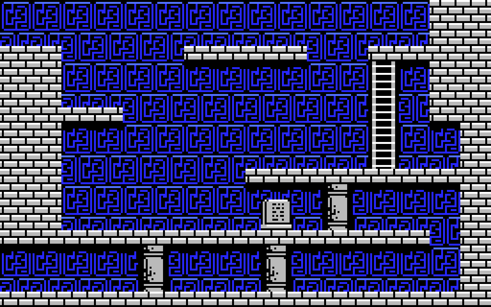
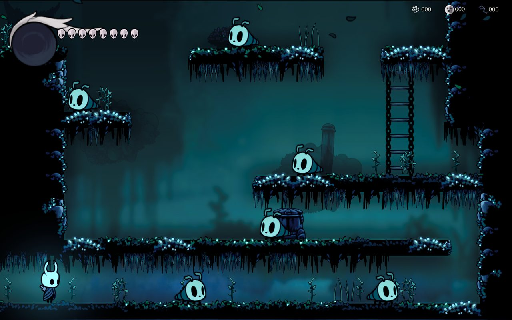
MSX · 1987RemakeMundo 1, sala 5. A la izquierda, el MSX de 1987 (el fondo de la sala sacado de la ROM); a la derecha, la misma sala en el remake, con la zona Sendero Verde de Hollow Knight.
Una lógica pura que avanza a 30 pasos por segundo, como la del MSX, y una capa de Unity que la dibuja suave a 60 o 120 fotogramas.
PlayerMotorUna clase sin MonoBehaviour, en píxeles del original dentro de la sala (x = centro, y = pies). Aplica tick a tick la física medida en openMSX: el salto, la caída, las escaleras, los líquidos, el retroceso y la espada. Al no depender de Unity, las pruebas la comparan directamente con las curvas grabadas en el emulador.
PlayerControllerLee la entrada (Input System) en cada fotograma y la guarda para el tick siguiente, ejecuta los ticks a 30 por segundo con un acumulador, avisa a GameBootstrap antes de cada paso y dibuja al Caballero interpolado entre el paso anterior y el actual.
// 30 pasos por segundo, como el original; el resto del fotograma se usa para interpolar. accumulator += Time.deltaTime; float tick = 1f / OriginalPhysics.TicksPerSecond; // 30 int guard = 0; while (accumulator >= tick && guard++ < 4) { accumulator -= tick; Snapshot(); if (roomPause > 0) { roomPause--; continue; } if (hitStop > 0) { hitStop--; continue; } // las pulsaciones se guardan para cuando siga Motor.Tick(delayed); delayed = input; ... Ticked?.Invoke(); } TickAlpha = NoInterpolation ? 1 : Mathf.Clamp01(accumulator / tick); UpdateVisual();
| Pieza | Qué hace |
|---|---|
GameBootstrap | El director: carga el mapa, cambia de sala, conecta enemigos, jefes, armas, inventario, santuarios, bancos y música. Es una clase partial repartida en GameBootstrap.cs, GameBootstrap.Maps.cs (mapa dibujado a mano) y GameBootstrap.Decor.cs (lápidas, entradas y fachadas). |
RoomWorld | Consulta de tiles en coordenadas del original; sigue los enlaces a la sala vecina si el punto cae fuera. Guarda una copia de la colisión de cada sala para cambiarla en juego (piedras rotas) sin tocar los assets. |
EnemySystem | Hasta 16 enemigos a la vez como en el original; los crea desde los generadores de la sala, los hace avanzar cada tick, resuelve contacto, espada, escudos, daño y botín. Los tipos están en Enemies/ por familias (andan, vuelan, fijos, generados, proyectiles). |
BossFight | El ciclo del jefe: escuchar la palabra, invocación, combate, disolución, Gran Llave y celebración. |
Weapons · Inventory | Las seis armas secundarias con sus límites, y los 47 objetos con sus efectos; con la regla de amuletos, coste en muescas. |
SaveGame | La partida en JSON en la carpeta de datos de la aplicación, escrita de forma atómica (primero .new, luego se reemplaza). |
UiKit · HollowMenus | Toda la interfaz se dibuja con IMGUI (OnGUI), con la fuente de Hollow Knight y sus filigranas. Para no generar basura, los componentes que no usan GUILayout desactivan su pasada de maquetación (useGUILayout = false). |
Un proyecto pequeño en paquetes y grande en herramientas: importadores, constructor de escenas, compilación por línea de comandos y pruebas.
Unity 6000.6.5f1, proyecto en unity/MazeOfKnight (el nombre de trabajo del remake era «Maze of Knight»).
URP 17.6 con el renderer 2D: luces 2D, posproceso con Volume (gradación, bloom, viñeta) y cámara en perspectiva por capas.
2D Tilemap y Tilemap Extras, Pixel Perfect, Input System (teclado y mando), Newtonsoft JSON y Test Framework.
tools/extract/collision.py y tools/extract/unity_bundle.py generan extracted/unity/<mapa>.json: 11 mapas y 321 salas, más el final del juego.
Menú Maze of Knight → Importar salas (o en batch con GaliousImporter.ImportAndRenderBatch). Crea un MapData por mapa y un RoomData por sala con su rejilla, enlaces (−1 sin salida; 0xF5–0xFE salida al castillo), colisión 32 × 20, enemigos, objetos, piedras y puertas.
Cada mapa tiene una vista general con todas las salas en su rejilla, una capa de Tilemap por clase de colisión; se abre con Abrir mapa → Castillo / Mundo 1…10. En batch, además, se renderiza a PNG para compararla con los mapas montados con capturas del emulador.
ArtImporter (un AssetPostprocessor) trata todo PNG de Art/Resources/Hollow como sprite a 8 texels por píxel del original, bilineal, sin mipmaps ni compresión, con el pivote en los pies o en el centro según la carpeta.
Crear escena de juego (GameSceneBuilder) monta Game.unity y configura el render 2D; el jugador empieza donde en el original: castillo, sala 1, x = 192, y = 120.
UNITY=/Applications/Unity/Hub/Editor/6000.6.5f1/Unity.app/Contents/MacOS/Unity # importar las salas y renderizar las vistas generales (sin -nographics: hace falta GPU) $UNITY -batchmode -projectPath unity/MazeOfKnight \ -executeMethod MazeOfKnight.EditorTools.GaliousImporter.ImportAndRenderBatch -quit # pruebas EditMode $UNITY -batchmode -projectPath unity/MazeOfKnight -runTests -testPlatform EditMode \ -testResults "$PWD/logs/unity/tests.xml" # compilar para macOS (también BuildLinux, BuildWindows, BuildWeb) $UNITY -batchmode -quit -projectPath unity/MazeOfKnight \ -executeMethod MazeOfKnight.EditorTools.GameBuild.BuildMac
| Concepto | Valor |
|---|---|
| Unidad de Unity | 1 u = 16 px del original; un tile de 8 px = 0,5 u; una sala = 16 × 10 u |
| Celdas | RoomCoords.Cell(room, col, fila): la fila 0 es la de arriba; el eje y de Unity crece hacia arriba |
| Coordenadas del original | x, y de pantalla; la sala empieza en y = 32 (debajo del marcador). RoomCoords.PixelToWorld las convierte |
| Arte | 8 texels por píxel del original → 128 píxeles por unidad |
| Tiempo | 1 tick = 1/30 s (un ciclo del juego cada dos fotogramas de vídeo a 60 Hz) |
Debajo de cada sala de Hollow Knight hay una rejilla de 32 × 20 casillas de 8 píxeles: la colisión exacta del juego de 1987.
El juego decide qué es cada casilla por el número de tile del mapa de nombres en RAM [C]. tools/extract/collision.py lo convierte en una letra por casilla y una cuadrícula de 20 filas × 32 columnas por sala, incluidas las piezas superpuestas (piedras, muros, estatuas, puertas, escaleras extra). La sala del jefe trae además su versión de combate.
Esta clasificación se validó en el emulador con 91 caídas en 12 salas: en todas el jugador acabó apoyado en una casilla que la cuadrícula marca como sólida [O].
.aire y fondo#sólido: tile ≥ 0xBAHescalera: 9A, 9B~agua: B6, B7Llava: B8, B9jsólido que se atraviesa en combate (BA–EF)collision.py: muro a la izquierda, plataformas, una escalera y agua en la mitad de abajo. 640 casillas que deciden dónde se pisa, se trepa o se nada.| Medida | Valor del original |
|---|---|
| Pantalla de juego | 256 × 160 px (32 × 20 tiles de 8 px) bajo un marcador de 32 px; 8 × 5 bloques de 32 × 32 |
| Mapas | castillo de 147 salas en una cuadrícula de 15 × 16 y 10 mundos de 5 a 27 salas: 321 en total |
| Enlaces | cuatro por sala (arriba, abajo, izquierda y derecha); en los mundos, F5–FE significa «volver al castillo» |
| Recuento de tiles | fondo 109 735 · sólido 76 671 · escalera 6 796 · agua 2 406 · lava 3 432 |
| Caja del jugador | paredes: x − 8 … x + 7; apoyo en el suelo solo con x − 4 … x + 4 [O] |
| Rareza | la sala 4 del mundo 3 enlaza hacia arriba consigo misma: un pozo sin fin que, subido 5 veces, abre un muro |
Como en Hollow Knight, la colisión no se ve. Arrastra el tirador para descubrir, en rojo, el sólido del original bajo el escenario (la rejilla se enciende en el juego con F10).
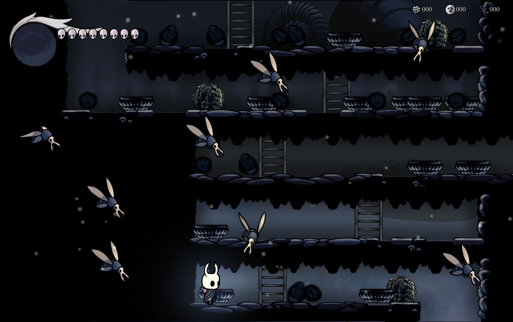
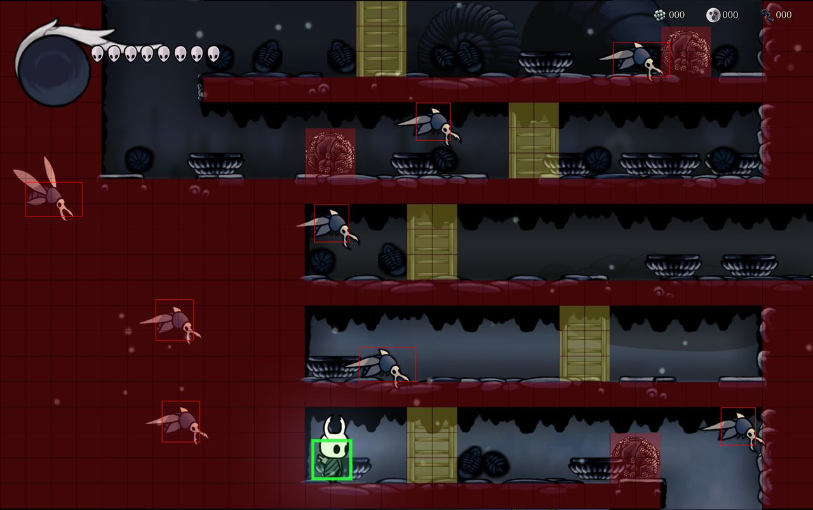
ArteColisiónCastillo (Cruces Olvidados). A la derecha, en rojo, lo sólido del original; las escaleras, en amarillo.
HollowSceneryEl sólido de cada sala se pinta negro puro (el interior de la roca) y piezas sueltas del kit de la zona visten sus bordes, sin pasarse mucho de ellos para que lo que se ve sea lo que se pisa. Todo sale de una semilla por sala, así que cada sala es siempre igual, y se rehace si su colisión cambia.
public const float Lip = 2f; // px que asoma el suelo por encima de donde se pisa public const float Overlap = 0.8f; // cada pieza empieza al 80 % de la anterior public const float TechoMax = 12f; // Negro puro, como el contorno del arte: con un poco de color, la gradación de cada zona // (saturación y filtro) lo volvía gris azulado o verdoso. public static readonly Color Rock = Color.black;
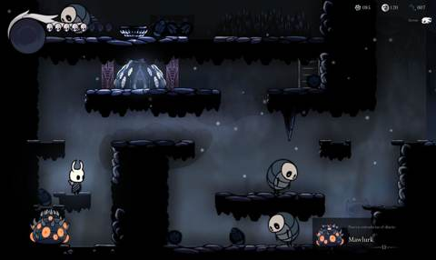
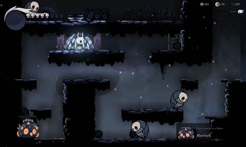
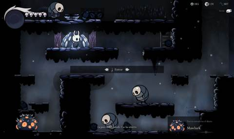
Un importador por familia de arte: de los atlas de Hollow Knight a sprites sueltos con nombre, escala y pivote fijos.
El arte se lee de una carpeta local con Hollow Knight decodificado y sale a Assets/Art/Resources/Hollow/. Cada script de tools/hollow/ se ocupa de una familia; import_hollow.py los ejecuta todos (con Pillow, en el entorno .venv del repo).
| Script | Qué importa |
|---|---|
import_hollow.py | El Caballero (Popolon) y Hornet: un PNG por fotograma con su nombre de ArtLibrary, mirando a la derecha, pies abajo en el centro, y fps.txt con la velocidad y el bucle de cada clip |
enemigos.py | Una criatura de Hollow Knight por tipo del original, con sus acciones (quieto, mover, atacar, girar, morir) y los proyectiles |
escenario.py · atlas_piezas.py | Kits de piezas por zona (suelos, techos, paredes, fondos); atlas_piezas.py numera las manchas de un atlas sin recortar y da su caja |
efectos.py · tajos.py · armas.py | Chispas, grietas, polvo y piezas del atlas de impactos; los tajos arriba y abajo; los proyectiles de las armas |
objetos.py · iconos.py | Iconos de amuletos para los 47 objetos, piedras, verjas, puertas y escaleras; iconos de la ROM redibujados al estilo de Hollow Knight |
liquidos.py · ambiente.py | Superficie ondulada, gotas, salpicaduras; partículas, luz y niebla de cada zona |
hud.py · menu.py · inventario.py · diario.py | Máscaras y orbe del marcador; menús, filigranas y fuente; inventario y amuletos; el diario del cazador |
bancos.py · cornifer.py · dioses.py · decorados.py | Un banco por zona; Cornifer y su mapa; los dioses de los santuarios; lápidas, entradas y fachadas de las puertas |
musica.py | Las pistas por zona, santuario y jefe, mezcladas y normalizadas a −14 LUFS |
La regla que lo une todo: un píxel del original son 8 texels de arte. Como una unidad de Unity son 16 píxeles del original, los sprites se importan a 128 píxeles por unidad. Así el arte en alta resolución cae exactamente sobre la rejilla de 8 px y nunca la cambia.
El Caballero va a ×1,375: su cuerpo sin los cuernos mide 16 px, lo que el sprite de Popolon del original (22 px con ellos). Hornet iba a ×1,125 (30 px), algo menos alta que en Hollow Knight para caber en estas salas.
public const float TexelsPerPixel = 8f; public const float PixelsPerUnit = TexelsPerPixel * Data.RoomCoords.PixelsPerUnit; // 128 ... importer.spritePixelsPerUnit = PixelsPerUnit;
Cada enemigo se escala a partir de su caja de contacto original, con una sola escala para los dos ejes (no se deforma): la menor que hace que su cuerpo (la silueta sin patas, alas finas ni armas) mida k veces la caja de alto o de ancho. Se apoya abajo en el centro de la caja si anda, o en su centro si vuela. Ninguna colisión cambia; la prueba HollowEnemyArtTests lo vigila. Y el tamaño se fija al aparecer: en el original la caja cambia con cada pose y el dibujo se estiraba y encogía.
# clave → tipos del original, colección tk2d, anclaje, k y clips de cada acción "murcielago": dict(types=[0x0E], col="Buzzer", anchor="centro", k=1.5, # Vengefly clips={"quieto": "Idle", "mover": "Fly", "atacar": "Chase", "girar": "TurnToFly"}), "esqueleto": dict(types=[0x25], col="Zombie Basic1", anchor="pies", k=1.25, # Husk clips={"quieto": "Idle", "mover": "Walk", "atacar": ["Attack Anticipate", "Attack Lunge"]}),
La espada golpea una franja de 4 px de alto (y − 7 … y − 4), de x + 8 a x + 18. Delante y solo delante.
SlashBoxFromArtLa caja es la del tajo dibujado, medida en sus texturas: delante de x + 2 a x + 22 y de y − 19 a y − 4; arriba y abajo, 22 px. Era frustrante que el golpe no diera a lo que tocaba el tajo.
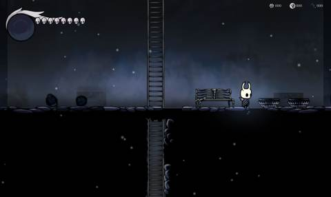
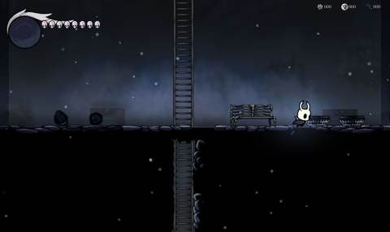
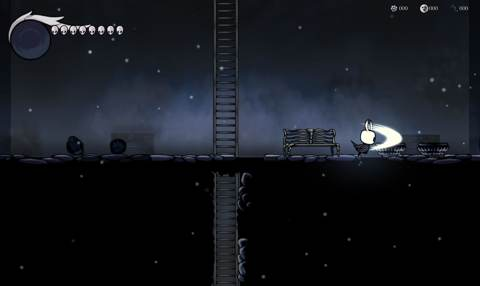
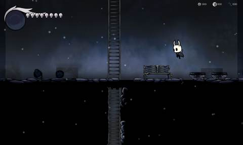
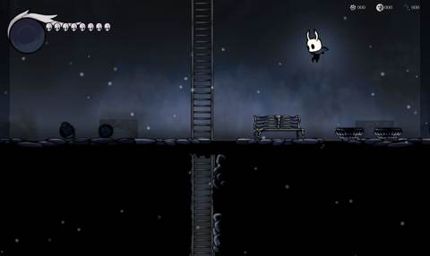
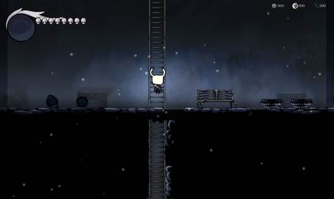
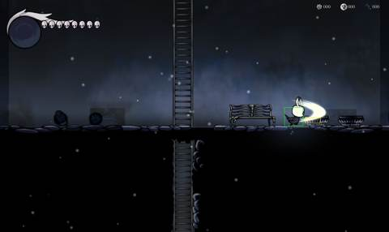
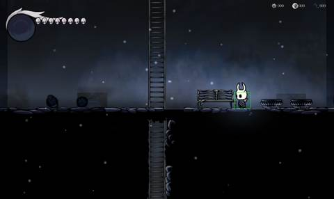
Hollow Knight no tiene escaleras: se montan con piezas suyas (barras de hierro en el castillo, cadenas de campanas en los mundos construidos y cadenas con travesaños en los demás), un trozo cuadrado escalado sin deformar a 16 × 16 px y partido en 4 baldosas que MapView alterna. El Caballero sube de espaldas con los fotogramas de entrar por una puerta. Las piedras rompibles son rocas de geo, las puertas con llave la verja del Archivo y los ascensores, la plataforma del Coliseo.
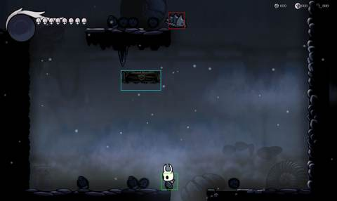
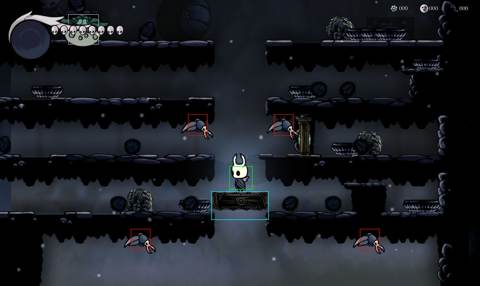
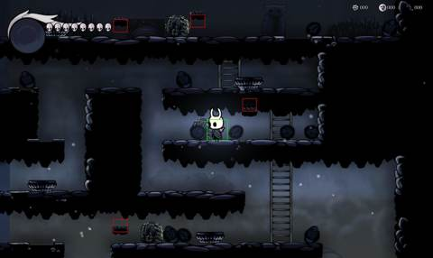
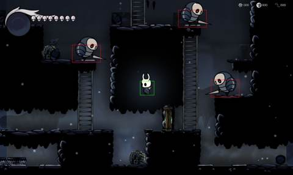
Cada mundo lleva el aire de una zona de Hollow Knight: su color, su oscuridad, su luz y lo que flota en él.
En Hollow Knight cada escena lleva un SceneManager con la saturación y las curvas de color, la luz ambiente, el color de la luz del Caballero y un nivel de oscuridad (de −1 a 2): la viñeta deja un hueco alrededor del Caballero que la linterna agranda. La cámara enciende las partículas de su zona. HollowAmbience hace lo mismo por mundo con un Volume de URP.
| Mapa | Zona de Hollow Knight | Oscuridad | Partículas |
|---|---|---|---|
| Castillo | Cruces Olvidados | 0 | polvo |
| Mundo 1 | Sendero Verde | 0 | hojas |
| Mundo 2 | Canales Reales | 1 | goteo y niebla baja |
| Mundo 3 | la Colmena | 0 | hexágonos |
| Mundo 4 | Picos de Cristal | 0 | cristales que flotan |
| Mundo 5 | Ciudad de las Lágrimas | 0 | lluvia |
| Mundo 6 | Páramos Fúngicos | 0 | esporas |
| Mundo 7 | el Abismo | 1 | humo |
| Mundo 8 | Nido Profundo | 1 | hilos de telaraña y polvo |
| Mundo 9 | Confines del Reino | 0 | ceniza con viento |
| Mundo 10 | Palacio Blanco | −1 | pétalos |
Los valores de color de cada escena no están en los datos decodificados, solo los campos en el código. Se toman las imágenes de todas las salas de cada zona, reconstruidas desde sus ficheros de nivel.
El juego se lanza con -ambienteNeutro -capturaSalas para fotografiar las salas propias sin ningún filtro.
tools/hollow/medir_ambiente.py calcula color medio, saturación y brillo de unas y otras. De la diferencia salen el filtro de color, la saturación y el color de la bruma de cada mundo; a la saturación se le suman los 17 puntos que la cámara de Hollow Knight añade siempre.
En los Canales, el Abismo y el Nido, una viñeta deja un hueco alrededor del Caballero, más amplio y menos opaco que en Hollow Knight porque aquí la sala entera está en pantalla. La Vela del original hace de linterna y lo abre.
Una luz suave y aditiva que le acompaña, con el color de la zona; la luz de las puertas de los mundos atraviesa la oscuridad.
Entre el fondo y el plano de juego, una bruma del color medio de la zona, más espesa abajo, y jirones de niebla que pasan despacio.
Las salas de Hollow Knight tienen sombra junto a la roca. Aquí se calcula a partir de la rejilla: AmbientOcclusion oscurece el aire donde el suelo toca la pared, los rincones y la base de cada saliente, en una textura de negro con alfa por sala que va encima de los tiles y debajo de los personajes. Solo es aspecto: no toca la colisión.
public const int TexelsPerTile = 4; public const float Radius = 1.6f; // alcance, en tiles public const float MaxAlpha = 0.55f; // oscuridad máxima (en un rincón) // Oclusión de cada texel (0..1 = alfa del negro) de una rejilla cols × rows cuyo solid(col, fila) // dice si el tile es macizo (fila 0 arriba). Dentro del macizo es 0. public static float[] Compute(Func<int, int, bool> solid, int cols, int rows)
Que cada golpe se note: chispas, destellos, vibración del mando y líquidos vivos, sin tocar los tiempos del original.
HitEffects)Las piezas salen de los atlas de impactos de Hollow Knight, que vienen sin recortar y se separan por manchas.
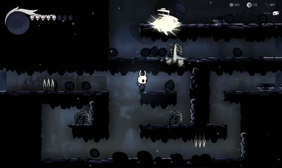
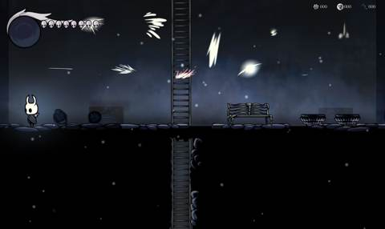
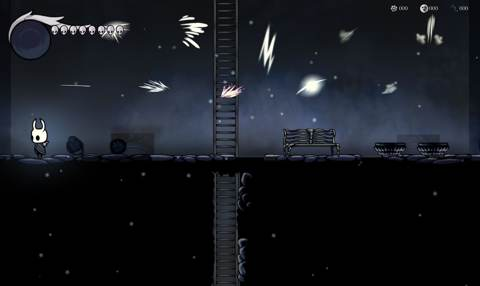
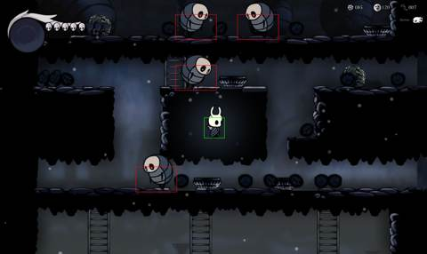
| Regla | Qué hace | Por defecto |
|---|---|---|
HitStop | Al acertar un golpe todo el juego se para 3 ticks (0,1 s; Hollow Knight, unos 0,11 s). Las pulsaciones de esos ticks se guardan. | activada |
CoyoteJump | El original deja 4 ticks quieto en el aire al salir de un borde; en los 2 primeros, ↑ salta como desde el suelo. | activada |
JumpBuffer | Una pulsación en los 2 últimos ticks en el aire salta en el primer tick en el suelo. | activada |
Las tres se activan o quitan a la vez con F11 (teclas de depuración). No cambian la física medida: solo perdonan o marcan el tiempo.
Rumble da un pulso corto al golpear (enemigo, piedra, pared o escudo), uno más fuerte al matar, al recibir daño y al curarse, y un zumbido que crece mientras el Caballero se concentra. Se quita en Opciones → Mando.
GameHaptics.bundle, compilado desde tools/native/GameHaptics.m.SetMotorSpeeds cuando la intensidad cambia (en pasos de 0,1): cada llamada sube un efecto al mando, y en una Legion Go 2 con SteamOS se quedaba una vibración larga y luego ninguna.#if UNITY_STANDALONE_OSX || UNITY_EDITOR_OSX [DllImport("GameHaptics")] static extern int GH_Available(); [DllImport("GameHaptics")] static extern void GH_Rumble( float intensity, float sharpness, float seconds); [DllImport("GameHaptics")] static extern void GH_Stop(); #else static bool Native => false;
HollowLiquids)El cuerpo lo pinta MapView por profundidad, con un degradado continuo de la superficie a la cuarta fila y por delante de los personajes. En la superficie, la línea ondulada animada de Hollow Knight. Agua: gotas que caen del techo y niebla flotando (sin burbujas: en Hollow Knight solo las tiene el ácido). Lava, que Hollow Knight no tiene: su agua en naranja con los glóbulos de la infección, burbujas que estallan, ascuas, humo y vapor. Al entrar o salir, una salpicadura.
Fundido desde negro al cambiar de sala y más largo al cambiar de mapa. Al entrar en un santuario del castillo la pantalla funde a negro en 0,45 s en lugar de hundir al Caballero 16 px en el suelo como el original (se le veía por encima de la piedra). La música también cambia con un fundido.
Un chip de 1987 emulado nota a nota para los efectos y las fanfarrias, y la banda sonora de Hollow Knight para cada zona y cada jefe.
El MSX suena con un PSG AY-3-8910 a 1,79 MHz: 3 canales de tono más ruido y envolvente, manejados por 14 registros. El driver de Konami lee una partitura propia (notas, silencios, tempo, octavas, «guiones» de instrumento para arpegios y percusiones, bucles) una vez por fotograma.
tools/openmsx/record_music.py graba los registros del PSG de cada canción en el emulador y tools/extract/score.py decodifica las partituras; la reconstrucción coincide con la grabación en el 98–100 % de los fotogramas de las 21 canciones.
Psg.csUn AY-3-8910 emulado (clase sin Unity, para poder probarla) reproduce los registros grabados de cada canción, recortados a una vuelta con su bucle, y los efectos del driver en el canal C con su prioridad: uno nuevo solo interrumpe al actual si su número es mayor o igual.
El chip escribe sus muestras directamente en la salida de audio (PsgOutput.OnAudioFilterRead, búfer de 256 muestras) en vez de un clip en streaming, que llegaba con retardo: el efecto suena en 1 fotograma.
| Dónde | Pista de Hollow Knight |
|---|---|
| Menú principal | Title |
| Castillo · mundos 1–10 | Cruces Olvidados, Sendero Verde, Canales Reales, la Colmena, Picos de Cristal, Ciudad de las Lágrimas, Páramos Fúngicos, el Abismo, Nido Profundo, Confines del Reino y Palacio Blanco (las que van por capas, mezcladas) |
| Santuarios | la de las salas con un personaje |
| Jefes | la pelea del jefe de Hollow Knight que hace de él: False Knight, Uumuu, Mantis Lords, Dung Defender, Nosk, Hornet (para el Traitor Lord), Soul Master (para el Mawlek), Broken Vessel, Grimm y la Radiance |
Las pistas de Hollow Knight vienen muy bajas (−25 a −29 dB de media) y quedaban por debajo de los efectos del chip. Al importarlas, musica.py mezcla sus capas y las normaliza con ffmpeg a −14 LUFS, con los picos a −1,5 dB. Con el volumen general a 7 (el de serie) suenan enteras.
LOUDNESS = -14 # LUFS de todas las pistas norm = f"loudnorm=I={LOUDNESS}:TP=-1.5:LRA=11" mix = ["-filter_complex", f"amix=inputs={len(parts)}:duration=longest:normalize=0,{norm}"]
Las fanfarrias del original: objeto importante, invocación del jefe, jefe vencido, muerte y el final. Mientras suenan, la música de Hollow Knight baja.
Al acertar suenan los del original: 0x1E al enemigo, 0x27 al jefe, 0x20 al morir y 0x1D al chocar con un escudo. El golpe en una pared que suena sigue siendo la pista de que aquí hay algo.
53 tipos leídos rutina a rutina, reimplementados desde su ficha y vestidos de criaturas de Hallownest.
tools/extract/enemy_ai.py desensambla, para cada uno de los 53 tipos que aparecen en salas, su rutina de inicio y la de actualización (dos tablas de saltos de la ROM).
Cada rutina se lee y se resume en docs/enemy_ai.md: velocidades en px/tick, tiempos en ticks, cajas de colisión por estado, qué dispara y cuándo. Se contrastan con lo medido en el emulador (trace_enemies.py, contact_measure.py, hitbox_measure.py).
En Enemies/, por familias: EnemyTypes, EnemyWalkers (andan y saltan), EnemyFlyers (voladores y trepamuros), EnemyFixed (trampas y torretas) y Projectiles (los 25 hijos). Combate medido: daño por tipo, retroceso de 6 ticks a 4 px, 42 ticks de invulnerabilidad.
Cada tipo lleva una criatura de Hollow Knight con un papel parecido; el dibujo se ajusta a su caja de contacto y no la cambia.
| Original | Hollow Knight |
|---|---|
| murciélago | Vengefly |
| esqueleto | Husk |
| caballero (solo se le daña por la espalda) | Husk con escudo |
| brote | planta trampa |
| rodador | Baldur |
| murciélagos que se fusionan | Gruzzer |
| reptador | Crawlid |
| erizo | Tiktik |
| espíritu | Lumafly |
| fantasma | Folly |
| hechicero | Soul Twister |
| estatua | Moss Knight |
| bocas de pared | Gulka |
| torretas | la del Mawlek |
| pinchos | los del Coliseo |
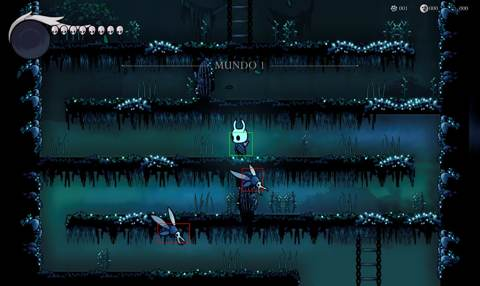
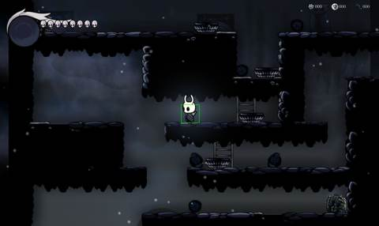
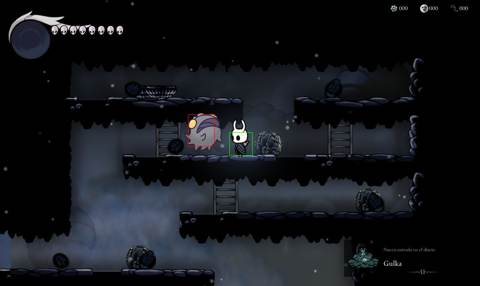
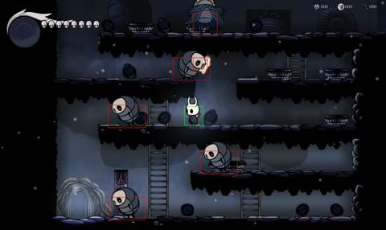
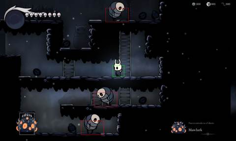
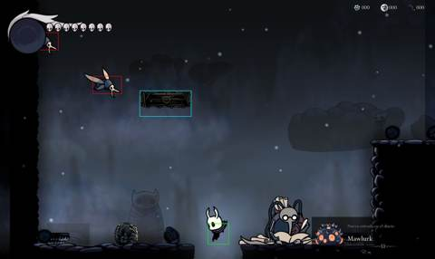
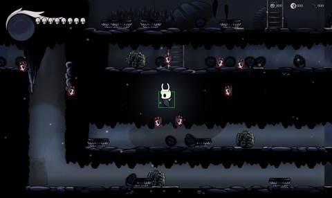
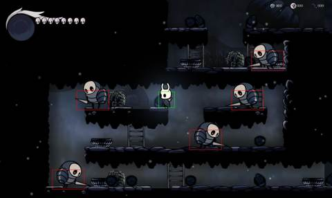
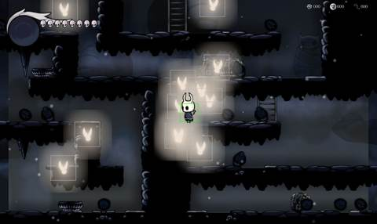
Al morir, el enemigo sortea botín según su tipo (flechas, monedas o llaves; geo con el arte de Hollow Knight), que se queda quieto en la rejilla de 8 px hasta recogerlo o salir de la sala.
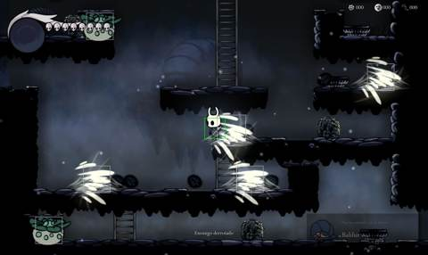
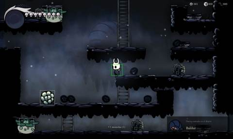
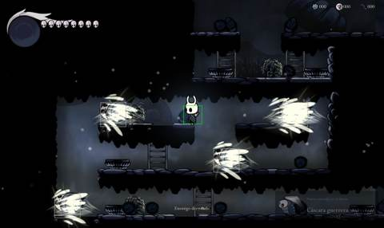
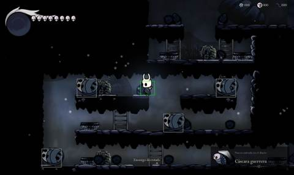
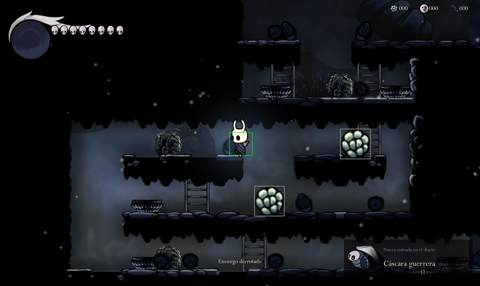
El original no lleva registro de enemigos. Con HollowJournal, la cuarta pestaña del inventario es el diario del cazador: como cada criatura ya lleva el dibujo de una de Hollow Knight, su entrada es la de esa criatura, con retrato, descripción y notas del cazador. Los tipos que comparten criatura comparten entrada: 61 en total, los jefes al final.
Las notas se leen a partir de 10 derrotas (los jefes, 1). Pinchos y torretas, que no se pueden derrotar, cuentan al verlos. La primera vez que se registra una criatura sale el aviso abajo a la derecha.
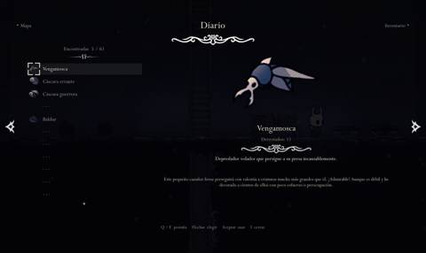
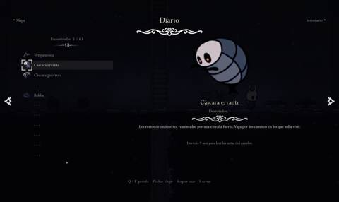
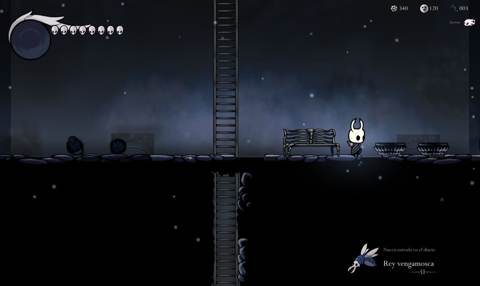
Diez nombres escritos en diez lápidas. Se teclea la palabra en la sala del jefe y la sala se cierra.
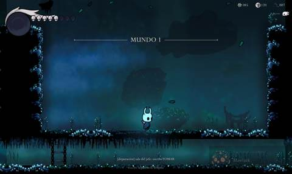
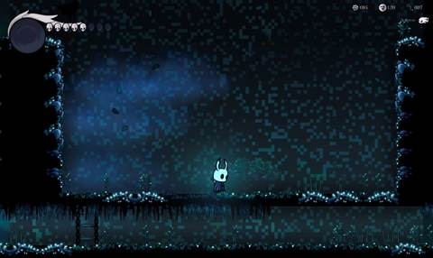
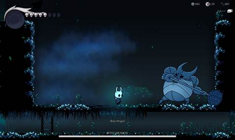

Pasea, salta y lanza huesos; le dañan flecha y espada. En el remake, la maza. Vida: 24.
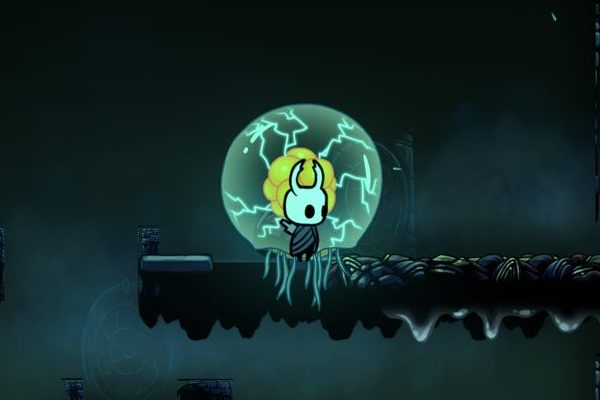
Fija; se abre y se cierra y lanza esporas. Solo recibe daño abierta. Vida: 40.
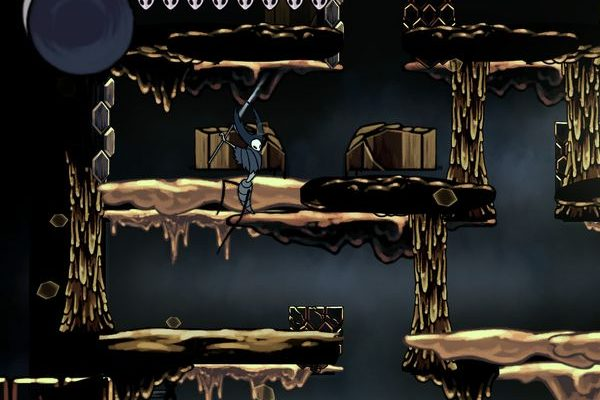
Asoma por los lados a cinco alturas y escupe fuego; luego se vuelve invisible. Vida: 64.
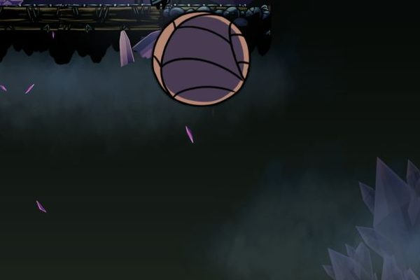
Se arrastra y salta para aplastar. La mina le quita 2. Vida: 112.
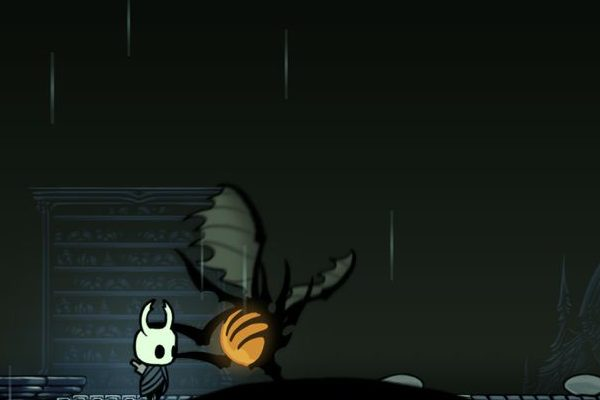
Vuela por una caja con la cabeza a tu altura. Solo la cabeza recibe daño. Vida: 72.
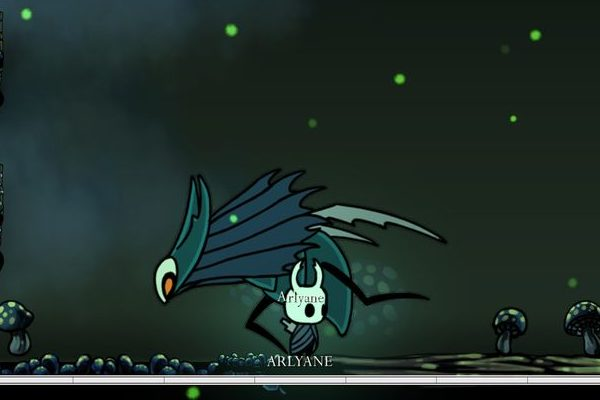
Camina y persigue; ráfagas de 6 disparos en abanico. Vida: 56.
Disparos en 8 direcciones; solo la boca o la lengua reciben daño. Vida: 64.
Baja por los bordes y sube a tu piso; 5 bolas que rebotan. Débil al fuego rodante. Vida: 80.
Llamaradas y 4 nubes de tormenta; retrocede al recibir un golpe. Vida: 80.
Se teletransporta con 8 bolas en órbita. Solo se le daña con la Cross. Vida: 248.
El Bony Dragon lanza 3 huesos en parábola mientras pasea y en lo alto de cada salto. Solo recibe golpes en la cabeza (16 × 32 px) y tocar a un jefe quita de 8 a 40 de vitalidad cuando se empieza con 8.
FalseKnightMace · HollowBossesEl False Knight se para y da con la maza; lo que hace daño es la bola donde golpea el suelo. Todos los jefes reciben golpes en todo el cuerpo dibujado (la maza incluida) y tocarlos quita de 1 a 3 máscaras según su fuerza original.
public static bool FalseKnightMace = true; // la maza en lugar de los huesos public static bool HollowBosses = true; // (daño + 6) / 12, entre 1 y 3: 1 el Bony Dragon… 3 Monster, King Dragon y Galious public static int BossContactMasks(int original) => System.Math.Max(1, System.Math.Min(3, (original + 6) / 12));
El dibujo de Hollow Knight sustituye a la imagen del jefe del original (que en el MSX es una imagen grande hecha con tiles del fondo y se mueve a saltos de 8 px). Su tamaño se fija con la caja de su primera aparición y al derrotarlo queda su animación de muerte. Si se muere en pleno combate, el jefe espera otra vez su palabra.
Once mapas de la ROM, once zonas de Hallownest. Pulsa una imagen para verla grande y recorre con las flechas.
Cruces Olvidados · Forgotten Crossroads
Castillo: 147 salas en la ROM. El mundo exterior: puertas a los diez mundos, santuarios de los dioses y ascensores.
Sendero Verde · Greenpath
Mundo 1: 15 salas en la ROM. Jefe: Bony Dragon.
Canales Reales · Royal Waterways
Mundo 2: 15 salas en la ROM. Jefe: Sea Anemone.
la Colmena · The Hive
Mundo 3: 16 salas en la ROM. Jefe: Elusive Dragon.
Picos de Cristal · Crystal Peak
Mundo 4: 17 salas en la ROM. Jefe: Jump Slime.
Ciudad de las Lágrimas · City of Tears
Mundo 5: 18 salas en la ROM. Jefe: Donra.
Páramos Fúngicos · Fungal Wastes
Mundo 6: 19 salas en la ROM. Jefe: Arlyane.
el Abismo · The Abyss
Mundo 7: 20 salas en la ROM. Jefe: Big Lip.
Nido Profundo · Deepnest
Mundo 8: 21 salas en la ROM. Jefe: Monster.
Confines del Reino · Kingdom's Edge
Mundo 9: 27 salas en la ROM. Jefe: King Dragon.
Palacio Blanco · White Palace
Mundo 10: 5 salas en la ROM. Jefe: Galious.
Menús, marcador, inventario, bancos y la muerte, como en Hollow Knight; las reglas de Galious siguen debajo.
Con HollowTitle el ciclo de presentación del original (logo, título, historia y demos) se cambia por un menú principal sobre una vista lejana del Palacio Blanco, con Continuar, Nueva partida, Opciones, Extras y Salir. Las opciones tienen Audio, Vídeo, Brillo, Mando y Teclado; todo se maneja con teclado o mando y los botones se cambian.
Los objetos pasivos de combate pasan a ser amuletos que cuestan muescas y solo hacen efecto equipados (HollowCharms): 3 muescas al empezar y una más por jefe vencido, hasta 13, cuando todos juntos cuestan 20. Se equipan sentado en un banco. El mapa se compra a Cornifer (uno por mundo, en la sala más alejada) y se dibuja a mano desde la colisión de cada sala.
18 en total: en la sala de inicio del castillo, en la entrada de cada mundo y en una sala vecina de la del jefe. Sentarse (↓) rellena las máscaras, guarda la partida y fija dónde se reaparece.
Cada espadazo que acierta da 11 de alma, hasta 99. Mantener F (o B en el mando) quieto durante 0,9 s gasta 33 y cura 2 máscaras. Sustituye a la experiencia del original.
Sin vidas ni GAME OVER: al morir se despierta en el último banco y el geo se queda en la sombra donde se cayó, que flota y ataca; al derrotarla (4 espadazos) se recupera.
Cada dios del original lo hace un personaje de Hollow Knight: Hefesto el Forjador de Aguijones, Ares Sly, Deméter Iselda, Atenea el Anciano Hu, Asclepio Jiji y la Muerte Grimm. Las reglas (precios, escudos en orden, guardar con Deméter) no cambian. El marcador muestra la vitalidad en máscaras, una por unidad, y el orbe de alma.
Con SoloKnight solo juega el Caballero; en la escena del castillo Aphrodite no aparece y el epílogo, con las mismas filas para no cambiar los tiempos (~108 s), cuenta que Popolon protegerá el Reino Hueco como su caballero.
Medido, no supuesto: el propio juego lleva un modo que recorre los mapas y apunta fotogramas, procesador, gráfica y basura.
-rendimiento <carpeta> lanza PerfProbe: sin sincronía vertical ni límite de fotogramas, pasa por tres salas de cada mapa (con su ambiente), por el inventario y por un santuario, y mide durante 4 s en cada sitio los FPS (media y el 1 % más lento), el tiempo de CPU y GPU (FrameTimingManager) y las recolecciones de basura. Lo deja en rendimiento.txt.
En un Apple M1 Pro, la media va de unos 710 a unos 1050 FPS según la sala y el 1 % más lento se queda por encima de unos 145 FPS en el peor sitio medido (los Canales Reales). Sin límite, el juego pasa de 700 FPS; por eso el límite por defecto es 120 (60 o 120 en Vídeo, o el refresco de la pantalla con sincronía vertical).
| Sitio | FPS medio | 1 % más lento |
|---|---|---|
| Castillo | 978 | 192 |
| Mundo 1 | 889 | 181 |
| Mundo 2 | 773 | 145 |
| Mundo 3 | 849 | 152 |
| Mundo 4 | 867 | 416 |
| Mundo 5 | 960 | 448 |
| Mundo 6 | 858 | 428 |
| Mundo 7 | 794 | 388 |
| Mundo 8 | 831 | 419 |
| Mundo 9 | 791 | 403 |
| Mundo 10 | 916 | 419 |
| Inventario | 713 | 422 |
| Santuario | 764 | 435 |
La lógica sigue a 30 pasos por segundo, como el original, pero el Caballero, los enemigos, los jefes, los proyectiles, la estela, el tajo y la luz se dibujan entre la posición del paso anterior y la del actual. Sin ello, a 60 o 120 FPS el movimiento iba a saltos. Medido andando con -rendimiento (y -sinInterpolar para comparar):
Porcentaje de fotogramas en los que el dibujo del Caballero no se mueve mientras anda. No se interpola en los cambios de sala, en saltos de más de 24 px ni mientras el juego está parado por un golpe.
// Posición de dibujo entre el paso anterior y el actual (en la misma sala y sin saltos de más de 24 px: // cambios de sala, bancos, teletransportes). public static Vector2 Interpolate(RoomModel room, float x, float y, RoomModel prevRoom, float px, float py) { var now = RoomCoords.PixelToWorld(room, 0, 0) + new Vector2(x, -y) / RoomCoords.PixelsPerUnit; if (room != prevRoom || Mathf.Abs(px - x) > 24 || Mathf.Abs(py - y) > 24) return now; float a = TickAlpha; return now + new Vector2((px - x) * (1 - a), -(py - y) * (1 - a)) / RoomCoords.PixelsPerUnit; }
Con -rendimiento <carpeta> -basura, la sonda mide los bytes que se piden por fotograma en una sala con enemigos y de dónde salen, apagando grupos de componentes uno a uno. Eran unos 6000 bytes por fotograma; quitando la pasada de maquetación de IMGUI (useGUILayout = false en los componentes con OnGUI que no usan GUILayout) y sin crear textos de nombres de clip y de pista en cada fotograma, quedaron unos 2200, que la recolección incremental reparte sin tirones.
Cuatro plataformas desde un script de editor, y un CI que las compila en servidores Linux.
| Plataforma | Método | Sale | Paquete del CI |
|---|---|---|---|
| macOS | GameBuild.BuildMac | Builds/Galious.app | Galious-macOS.tar.gz |
| Windows | GameBuild.BuildWindows | Builds/Windows/Galious.exe (x86_64) | Galious-Windows.zip |
| Linux / SteamOS | GameBuild.BuildLinux | Builds/Linux/Galious.x86_64 (Mono) y Galious.desktop | Galious-Linux.tar.gz |
| Web | GameBuild.BuildWeb | Builds/Web (WebGL, Brotli) | Galious-Web.zip |
«Galious - The Hollow Kingdom», de rldona, versión 1.0.0, con el icono del emblema. Sin la pantalla «Made with Unity»: Unity 6 permite quitarla también con la licencia Personal. Arranca a pantalla completa sin bordes con la resolución nativa; lo elegido en Vídeo se guarda.
-salida <ruta> compila en otra carpeta: recompilar encima del juego mientras se juega rompe la carga de recursos.
PlayerSettings.productName = Product; PlayerSettings.companyName = "rldona"; PlayerSettings.bundleVersion = "1.0.0"; ... // sin la pantalla de "Made with Unity" al arrancar (Unity 6 lo permite) PlayerSettings.SplashScreen.show = false; PlayerSettings.SplashScreen.showUnityLogo = false;
tar -xzf Galious-Linux.tar.gz: el tar conserva los permisos de ejecución de Galious.x86_64. Se empaqueta sin la carpeta *_BackUpThisFolder_ButDontShipItWithYourGame.
Modo escritorio → Steam → Añadir un juego que no es de Steam → Galious.x86_64.
Junto a cada build va la carpeta steam/ (desde assets/steam) con portada, cubierta, héroe, logo e icono: Propiedades → Personalizar.
assets/steam.tests.yml: en cada push a main y en cada pull request, las pruebas EditMode con game-ci/unity-test-runner, con caché de Library.
builds.yml: a mano o al subir una etiqueta v*; matriz de Windows, Linux, macOS (con Mono, en Linux: no gasta minutos de macOS), empaquetado y subida a una Release. La web no: tardaba una hora o más; se compila a mano en Unity.
wiki.yml: publica esta carpeta wiki/ tal cual en GitHub Pages cuando cambia en main.
Necesitan tres secretos del repo: UNITY_LICENSE, UNITY_EMAIL y UNITY_PASSWORD. Las builds van a una Release y no a los artefactos de Actions: cada build comprimida pesa unos 220 MB.
partida_pruebas.json) para no pisarla.192 pruebas EditMode que comparan el remake con lo medido en el emulador, y un recorrido que se pasa el juego solo.
Las pruebas viven en Assets/Tests/EditMode y se lanzan desde Window → General → Test Runner o con -runTests -testPlatform EditMode. Las de física comparan las curvas del motor con las grabadas en openMSX; las de cada regla del remake comprueban el juego con y sin ella.
Algunos nombres hablan solos: PlayerMotorTests.SwordDoesNotReachTwentyPixels, BossTests.HittingTheFalseKnightsMaceHurtsHim, PlayerMotorTests.HollowSwimFloatsSwimsAndJumpsOut.
| Fichero | Pruebas |
|---|---|
| PlayerMotorTests | 46 |
| EnemyTests | 25 |
| EnemyBacklogTests | 13 |
| BossTests | 9 |
| InventoryTests · RoomObjectsTests · ImportedDataTests | 8 + 8 + 8 |
| WeaponTests · BacklogTests | 7 + 7 |
| otros 19 ficheros | 61 |
| Total | 192 |
-recorrido <carpeta> lanza Playthrough, que se pasa el juego entero solo, con la partida guardada aparte:
Apunta en recorrido.txt cada error o excepción con el paso en que salió (y una captura), las salas donde no se puede colocar al Caballero o queda dentro de la roca, y los generadores con tipos sin implementar. -soloJefes 1,2,5 repite solo esos jefes.
| Modo de prueba | Qué hace |
|---|---|
-recorrido | el juego completo, de forma automática |
-rendimiento · -basura · -sinInterpolar | FPS, CPU, GPU, basura y fluidez |
-capturaSalas <carpeta> <mundo> | fotografía las salas con y sin la colisión marcada (y nadando, y tras caer en la lava) |
-capturaJefes <carpeta> <mundo> | 16 fotos de un combate en 4 s, con la caja del jefe en el registro |
-capturaMenu · -capturaBancos · -capturaPersonajes | menús y opciones; bancos, Cornifer y tajos; personajes, efectos y una sala por tipo de enemigo |
-depuracion | activa las teclas de depuración (K, G, F2–F11) |
Las imágenes de esta wiki salen de esos modos de captura.
Cada regla del remake es un interruptor. Apágalas y vuelves a jugar al Galious de 1987 con otra ropa.
Unity Hub con Unity 6000.6.5f1 y los módulos Mac, Windows Build Support (Mono), Linux Build Support (Mono) y WebGL.
unity/MazeOfKnight. Lo importado ya está en el repo (Assets/Generated desde la ROM y Assets/Art/Resources/Hollow desde Hollow Knight); para regenerarlo, tools/.
Escena Assets/Scenes/Game.unity → Play. El menú Maze of Knight compila para cada plataforma.
En Assets/Scripts/Runtime/Game/RemakeRules.cs, y comprobar con las pruebas.
| Regla | Qué cambia respecto al original | De serie |
|---|---|---|
NoRoomChangePause | sin el parón de 11 ticks al cambiar de sala | activada |
SoloKnight | solo juega el Caballero; Aphrodite no está | activada |
HollowTitle | menú principal y de pausa en lugar del ciclo de presentación | activada |
HollowBenches · HollowDeath | bancos para guardar y curarse; sin vidas ni GAME OVER, el geo en la sombra | activada |
HollowSoul | el alma y concentrarse para curarse, en lugar de la experiencia | activada |
HollowCharms | los objetos pasivos de combate son amuletos con muescas | activada |
HollowJournal | el diario del cazador | activada |
HollowMaps | Cornifer vende el mapa, dibujado a mano | activada |
HollowSlashes | tajos arriba y abajo, con rebote; saltar va con su botón | activada |
SlashBoxFromArt | la caja del golpe es la del tajo dibujado | activada |
HollowSwim | se nada en la superficie del agua, que no quita vida | activada |
LavaRespawn | la lava hace daño como un enemigo y devuelve al último suelo firme | activada |
FalseKnightMace · HollowBosses | la maza del False Knight; golpes en todo el cuerpo; tocar quita 1–3 máscaras | activada |
HollowMusic | música de Hollow Knight por zona y jefe | activada |
HollowAmbience | gradación, oscuridad, luz y partículas de cada zona | activada |
HollowMessages | sin mensajes abajo, solo los avisos | activada |
HitStop · CoyoteJump · JumpBuffer | la sensación de Hollow Knight (F11) | activada |
LeaveLadderSideways | soltarse de lado a media escalera | apagada |
BabyAlwaysPresent | el bebé del final siempre en una de las 10 piedras | apagada |
// Original: en el agua (y en la lava) se hunde despacio hasta el fondo y todo va 4 veces más lento. // Remake (como en Hollow Knight): en el agua el jugador flota en la superficie con los pies SwimDepth px // por debajo y nada a izquierda y derecha; salta y cae con la velocidad de fuera. public static bool HollowSwim = true; public const int SwimDepth = 8;
PlayerMotor.cs y OriginalPhysics.cs (las tablas del salto) con docs/player.md al lado.
Enemies/ con las fichas de docs/enemy_ai.md y docs/boss_ai.md.
Visuals/HollowScenery.cs (kits por zona), HollowAmbience.cs (color y partículas) y los scripts de tools/hollow.
public const float TicksPerSecond = 30f; public const int WalkSpeed = 2; // px por tick public static readonly int[] RiseTable = { 6, 6, 6, 6, 6, 5, 5, 4, 4, 3, 2, 1 }; // 54 px public static readonly int[] FallTable = { 1, 2, 3, 4, 4, 5, 5, 6 }; // y luego 6
TickAlpha).docs/design_bible/: qué hace el juego original y qué decide el remake, en 12 capítulos.